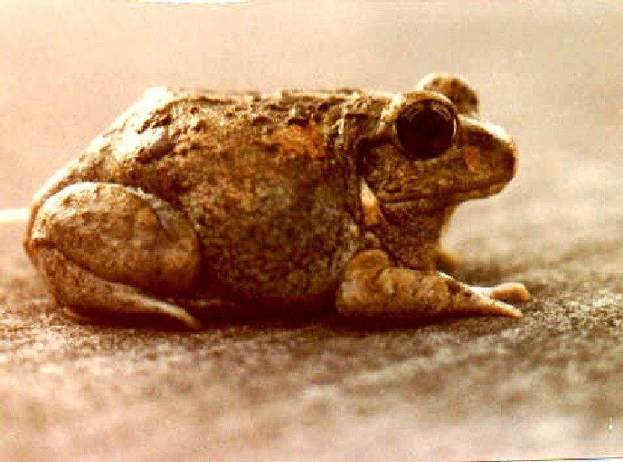

बिलकारी मेंढकIndian Burrowing Frog
Sphaerotheca breviceps · Dicroglossidae · AMP-0007

- Scientific name
- Sphaerotheca breviceps (Schneider, 1799)
- Family
- Dicroglossidae
- Hindi
- बिलकारी मेंढक
- Status here
- native
- IUCN
- LC
When to look कब देखें
Present all year.
बिलकारी मेंढक / Indian Burrowing Frog
Sphaerotheca breviceps (Schneider, 1799) — Dicroglossidae
बिलकारी मेंढक (इंडियन बरोइंग फ्रॉग) — पूर्वी उत्तर प्रदेश का एक अत्यंत विशिष्ट, मिट्टी के नीचे रहने वाला उभयचर है। यह मेंढक वर्ष के अधिकांश समय (शुष्क और सर्दियों के महीनों में) ज़मीन के नीचे दफन रहता है और केवल मानसून की पहली तेज़ बारिश के बाद बाहर निकलता है। इसका शरीर गोल, भारी और मजबूत होता है, तथा इसके पैर छोटे होते हैं, जिसके कारण यह अन्य मेंढकों की तरह लंबी छलांग नहीं लगा पाता। इसके पिछले पैरों पर कुदाल या फावड़े जैसे काले उभार (metatarsal tubercles) होते हैं, जिनकी मदद से यह पीछे की ओर से बहुत तेज़ी से मिट्टी खोदकर बिल बनाता है। प्रजनन के लिए इसका बाहर आना बहुत संक्षिप्त (48 से 72 घंटे) और सामूहिक होता है।
Quick Identification त्वरित पहचान
| Feature | Description |
|---|---|
| Size | Small to medium size (40–60 mm snout-vent length); stout, globose body shape |
| Digging Spades | Prominent, shovel-like, black metatarsal tubercle on the inner edge of hind feet |
| Head | Broad and short head with a rounded snout; eyes large and protruding |
| Colouration | Sandy-brown or olive-grey dorsum with dark mottling; white or marbled underside |
| Skin | Smooth to finely warty skin; folds above the ears (tympanum) |
| Movement | Crawls or makes clumsy, short hops; burrows backward into sandy soil in seconds |
Field tip: Look near sandy riverbanks or loose soils immediately after the first heavy monsoon showers. Listen for a loud, repeating "quack-quack" breeding call from temporary puddles.
Morphology आकारिकी
Biometrics (typical measurements in the northern Indian plains):
| Measurement | Range |
|---|---|
| Snout-vent length (SVL) | 40–60 mm |
| Weight | 12–28 g |
Description: The Indian Burrowing Frog has a highly specialized body structure adapted for a fossorial (burrowing) lifestyle. The body is short and toad-like, but the skin is relatively smooth compared to true toads. The head is very short with a rounded snout and large, prominent eyes. The limbs are short and muscular. The inner metatarsal tubercle on the hind foot is highly developed, large, compressed, and spade-shaped, with a hard black edge.
The dorsal coloration is sandy-yellow, light brown, or grey, with irregular dark markings and sometimes a faint light vertebral stripe. The belly is white and smooth.
Behaviour & Ecology व्यवहार और पारिस्थितिकी
This species is almost entirely fossorial. It uses its spade-like hind claws to dig backward into loose, sandy soil, disappearing beneath the surface in under 30 seconds.
- Aestivation: It can spend up to 9–10 months of the year buried 10–30 cm deep in dry soil, encased in a thin cocoon of shed skin to reduce moisture loss.
- Explosive breeding: With the first heavy monsoon rain, they emerge in large numbers. The breeding event is extremely rapid (lasting only 2–3 days), after which they feed intensively and return underground.
- Ecological role: Their burrowing helps aerate soil in dry fields and allows rainwater to penetrate deeper.
Tadpole Stage
- Body form and size: The tadpole is small, dark brown or grey, and robust, reaching about 25 mm in total length at maturity.
- Aquatic habitat preference: Breeds in short-lived, shallow rain puddles, muddy wheel ruts, and grassy pools that form suddenly.
- Duration to metamorphosis: Development is extremely rapid, taking about 3 weeks. This speed is critical as their pools dry out quickly.
- Distinguishing features: Small, strong tail with dark pigmentation; strong beak-like mouthparts for scraping detritus in muddy water.
Life Cycle / Phenology जीवन चक्र
- Breeding trigger: The very first heavy rains of the monsoon (usually June).
- Eggs: Females lay small masses of eggs containing 400–1,000 eggs that sink to the mud at the bottom of temporary pools.
- Hatching: Tadpoles hatch within 24 hours. Metamorphosed froglets emerge within 20–25 days and immediately dig themselves into the damp soil near the drying pool margins.
Host Plants or Prey आहार
Primary food items:
- Insects: Termites, beetles, ants, and crickets.
- Larvae: Beetle grubs and cutworms present in the soil.
- Invertebrates: Earthworms and small snails.
Predators / Natural Enemies शत्रु
- Nocturnal predators: Owls and small carnivores like civets and mongooses.
- Reptiles: Sand snakes (Psammophis) and Russell's Vipers (Daboia russelii) which search loose soils.
- Aquatic predators: Large wading birds when the frogs congregate at pools.
Agricultural / Human Relevance कृषि प्रासंगिकता
Soil beneficial. They are important natural allies for farmers. They consume soil-dwelling insect pests (including root grubs) in vegetable crops. Their burrowing behavior also aids in soil bioturbation and natural aeration, helping crop roots grow.
Expected Locally स्थानीय रूप से अपेक्षित
Not a field record. Written from published accounts for eastern Uttar Pradesh. No confirmed local sighting yet — if you have seen it, that is what the atlas needs.
अभी तक स्थानीय पुष्टि नहीं। यह विवरण प्रकाशित स्रोतों से है, किसी अवलोकन से नहीं।
Commonly found in the sandy banks of the Saryu and Ghaghra floodplains in Basti. Villagers occasionally dig them up while preparing fields for Kharif crops. They are also known as "Matkhodwa" (soil diggers) in local dialects. Their brief, loud breeding assemblies at the onset of rain are a well-known local phenomenon.
Distribution वितरण
Global range: Throughout India, Nepal, Pakistan, Bangladesh, Myanmar, and Sri Lanka.
In India: Widespread in plains and dry regions.
In Uttar Pradesh: Common resident in alluvial and sandy plain soils.
In Basti district / eastern UP: Highly common in agricultural areas with loose soils.
Research Questions शोध प्रश्न
Anyone can investigate these | कोई भी इन प्रश्नों की जाँच कर सकता है
- How deep do Indian Burrowing Frogs bury themselves during winter dormancy in Basti? — Locate hibernating frogs and measure depth and soil type.
- What triggers the explosive emergence of Sphaerotheca breviceps (is it rainfall volume, soil temperature, or acoustic vibration)? — Monitor environmental triggers of emergence.
- What is the survival rate of tadpoles in pools that dry out before metamorphosis? / क्या उन गड्ढों में टैडपोल जीवित रहते हैं जो रूपांतरण से पहले ही सूख जाते हैं? — Track pool hydration and tadpole density.
- How do local agricultural tillage practices (mechanical ploughing) impact hibernating populations? — Survey fields before and after tractor tilling.
- Does the skin cocoon of aestivating frogs prevent pesticide absorption from dry soils? / क्या निष्क्रिय मेंढकों का त्वचा-कोकून सूखी मिट्टी से कीटनाशक अवशोषण को रोकता है? — Run laboratory-aligned skin barrier studies.
Similar Species मिलती-जुलती प्रजातियाँ
| Species | Key Difference | हिंदी |
|---|---|---|
| Duttaphrynus melanostictus (Common Toad) | Heavily warty, dry skin; prominent head ridges; moves slowly; lacks digging spades | भेंडुक — बहुत मस्सेदार त्वचा और पिछले पैर पर कुदाल नहीं होती |
| Fejervarya limnocharis (Asian Grass Frog) | Slender body; pointed head; lacks digging spades; makes long jumps; lives on wet grass | फुदकी मेंढक — छोटा और फुर्तीला, पिछले पैर पर कुदाल नहीं होती |
| Hoplobatrachus crassus (Jerdon's Bullfrog) | Much larger (up to 100 mm); has similar spade-like tubercle but lives in deep mudbanks and swims | चित्तीदार मेंढक — आकार में बहुत बड़ा और जलीय होता है |
Field rule: Globose body shape, short head, short limbs, and a large black, spade-shaped metatarsal tubercle on the inner hind foot identify the Indian Burrowing Frog.
Taxonomy & Classification वर्गीकरण
Original description. Johann Gottlob Schneider described the Indian Burrowing Frog as Rana breviceps in 1799 in his work Historiae Amphibiorum naturalis et literariae (p. 140). The type locality was India. The genus name Sphaerotheca was proposed by Albert Günther in 1859, derived from the Greek sphaira (ball/globe) and theke (case/box), describing the round body shape. The species epithet breviceps is derived from the Latin brevis (short) and ceps (head), referencing the short head.
Subspecies. Monotypic.
Family and order placement. Placed in the order Anura, family Dicroglossidae, subfamily Dicroglossinae.
Phylogenetic notes. Sphaerotheca is closely related to the genus Fejervarya but diverges in specialized digging anatomy.
IUCN status rationale. Listed as Least Concern (LC) because of its broad range, adaptability, and absence of major threats.
Photo Gallery फोटो गैलरी
References संदर्भ
- Schneider, J. G. (1799). Historiae Amphibiorum naturalis et literariae. Fasciculus primus. Jena, p. 140. [original description]
- Günther, A. (1859). Catalogue of the Batrachia Salientia in the Collection of the British Museum. Taylor and Francis, London.
- Daniel, J. C. (2002). The Book of Indian Reptiles and Amphibians. Bombay Natural History Society / Oxford University Press, Mumbai.
- Frost, D. R. (2024). Amphibian Species of the World: an Online Reference. Version 6.2. American Museum of Natural History, New York.
- IUCN SSC Amphibian Specialist Group (2024). Sphaerotheca breviceps. IUCN Red List of Threatened Species. Ver. 2024.
- GBIF Occurrence Data — Sphaerotheca breviceps, Uttar Pradesh (2010–2025).
Source file: species/fauna/amphibians/burrowing_frog.md